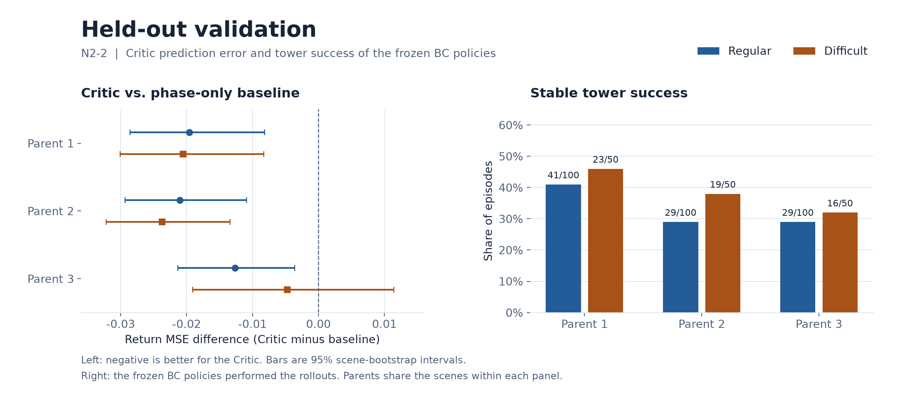
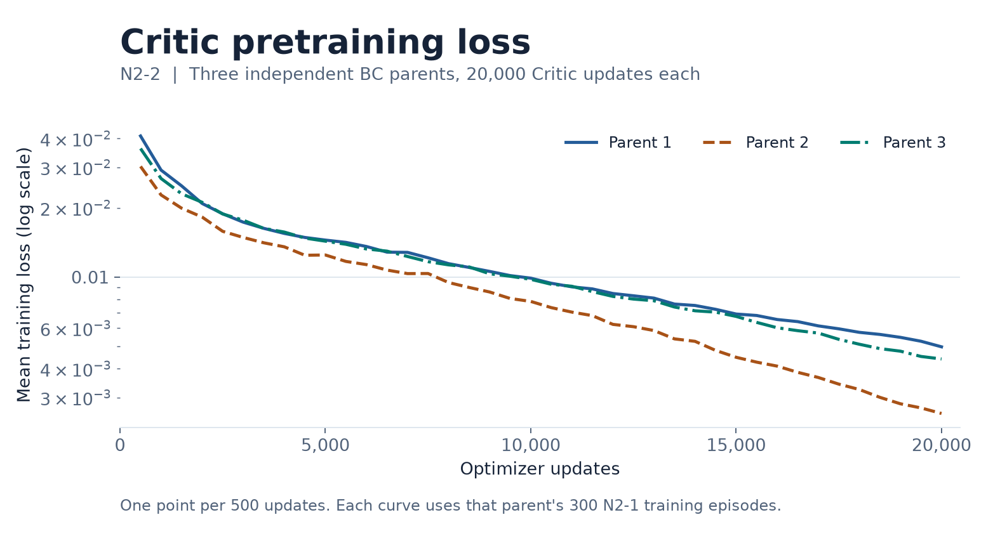
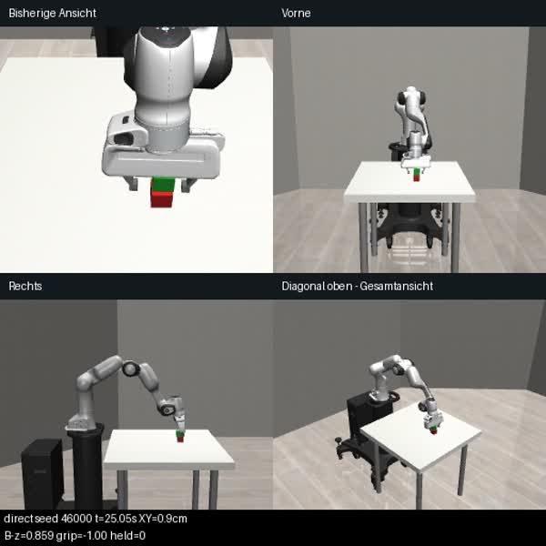
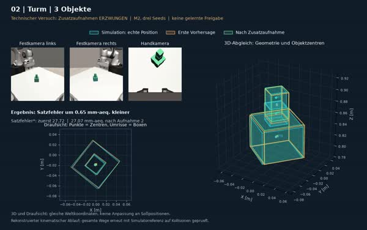

Beyond the Demonstrated Task
A robot has only ever been shown how to stack one cube on another. Can it learn to build a tower of three — a task no expert ever demonstrated — from the success and failure of its own attempts?
Can learned skills reach a task nobody demonstrated?
Behavior Cloning (BC) copies an expert: a policy predicts the expert's action from the current situation. It can only reproduce what the demonstrations contain. Demonstrations are expensive, and a robot is rarely shown every task it will face later.
Using only two-cube demonstrations, does an IL-informed critic improve three-cube stacking in new scenes?Proposal · Research question
What changes from two to three cubes
Why not just add an expert?
DAgger-style correction needs an expert for the target task. The project deliberately rules that out. The only new signal is whether the robot's own attempt succeeded — the tower stands — or failed.
In simulation those attempts are cheap. The project asks whether that feedback extends a BC policy beyond the task it was taught, and how many attempts that costs.
Small errors compound over long tasks
A task succeeds only if every step succeeds. A skill that looks reliable in isolation can still fail most long tasks. Try it: this is the arithmetic behind the proposal's outlook.
of tasks complete.
Where the transfer breaks
Seven stage networks per placement (names simplified); a fixed retreat rule clears the tower between placements. Phase audit: of 48 second-lift starts reached in full rollouts, 15 had no grasp — and all 15 failed (BC-004).
One BC policy, three ways to continue
In actor–critic learning, a critic estimates how likely an action leads to success, and the actor (the policy) is nudged toward actions the critic rates highly. The question is whether a critic that has first watched the BC policy's own attempts gives the actor a better start.
BC
The policy as learned from two-cube demonstrations, without further training. Reference point.
Actor–Critic · new critic
Further training on the robot's own three-cube attempts, with a critic that starts untrained.
Actor–Critic · IL-informed critic
Same training, but the critic is first trained on the outcomes of the BC policy's attempts.
The critic works on paper. The actor step is blocked.
The pipeline for the main comparison (night plan three_cube_transfer_v1) has passed data collection and critic validation. The first constrained actor–critic smoke test stopped at a technical gate.
Critic data at a glance
⚠ Open decision
With δmax = 0.05, all 6 runs left the allowed Q range [−0.05, 1.05]; every other gate passed. Out-of-range values appeared before the first actor update, so the issue sits in the critic's output range rather than in policy drift. The larger limits (0.10, 0.20) were not run. The pilot waits for a decision on how to proceed.


Everything behind the proposal
Each page goes deeper into one part of the work. Use the navigation bar or follow the "Next" link at the bottom of every page.

